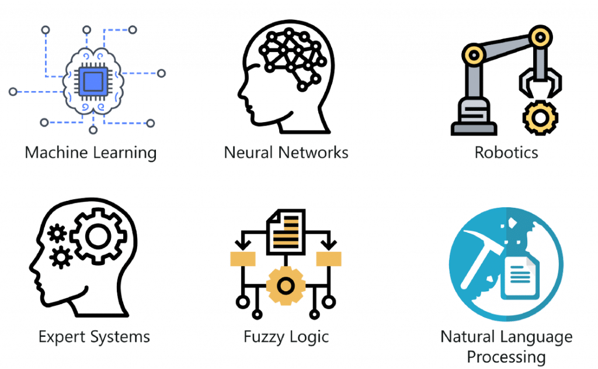

La inteligencia artificial (AI) es un campo de la informática que se dedica a crear sistemas y programas
capaces de realizar tareas que, tradicionalmente, requerirían inteligencia humana. Estos sistemas utilizan
algoritmos y modelos para procesar información, aprender de datos previos y tomar decisiones autónomas.
El objetivo fundamental de la AI es emular y ampliar las capacidades cognitivas humanas, permitiendo a
las máquinas realizar actividades como el aprendizaje, la percepción, el razonamiento y la resolución de
problemas.
"La inteligencia artificial es el arte de hacer que las máquinas realicen cosas que requerirían inteligencia si fueran hechas por humanos." - Marvin Minsky
Las aplicaciones de la inteligencia artificial (IA) abarcan una amplia variedad de campos y sectores, desde la
atención médica hasta la industria automotriz. La AI se utiliza para automatizar tareas, tomar decisiones basadas en
datos,mejorar la eficiencia y resolver problemas complejos.
Algunos ejemplos incluyen diagnósticos médicos, chatbots de servicio al cliente, sistemas de recomendación en
línea y vehículos autónomos. La AI continúa transformando la forma en que interactuamos con la tecnología y abriendo
nuevas posibilidades en diversas industrias.

"La inteligencia artificial es la capacidad de adquirir y aplicar conocimientos." - Russell S. Taylor
La AI abarca diversas ramas que se centran en diferentes aspectos y aplicaciones. Algunas de las principales
ramas incluyen:
Aprendizaje Automático (ML): Es una rama de la inteligencia artificial que se enfoca en desarrollar algoritmos y
modelos que permiten a las máquinas aprender patrones y tomar decisiones basadas en datos, sin ser programadas
explícitamente.
Redes Neuronales (NN): Son un tipo de modelo de aprendizaje automático inspirado en la estructura del cerebro
humano. Consisten en capas de unidades llamadas neuronas artificiales que procesan información y pueden
utilizarse para tareas como clasificación y reconocimiento de patrones.
Robótica (Robotics): La robótica combina la inteligencia artificial con la ingeniería para diseñar y construir robots. Los
robots son máquinas programables que pueden realizar tareas físicas o cognitivas en entornos variados, desde
fábricas hasta exploración espacial.
Sistemas Expertos (ES): Son sistemas de software diseñados para imitar el conocimiento y la toma de decisiones de
un experto humano en un dominio específico. Utilizan reglas y hechos para ofrecer recomendaciones y soluciones en
áreas como diagnóstico médico y soporte técnico.
Lógica Difusa (Fuzzy Logic): La lógica difusa se utiliza en situaciones donde las condiciones no son completamente
verdaderas ni completamente falsas, sino que pueden ser parcialmente verdaderas. Ayuda en la toma de decisiones
en contextos donde la precisión no es absoluta, como en sistemas de control.
Procesamiento del Lenguaje Natural (NLP): Es una rama de la inteligencia artificial que se enfoca en la interacción
entre las computadoras y el lenguaje humano. NLP se utiliza para tareas como traducción automática, análisis de
sentimientos y generación de texto en lenguaje natural.

"La inteligencia artificial es la simulación de procesos de inteligencia humana mediante la programación de sistemas de cómputo." - John McCarthy